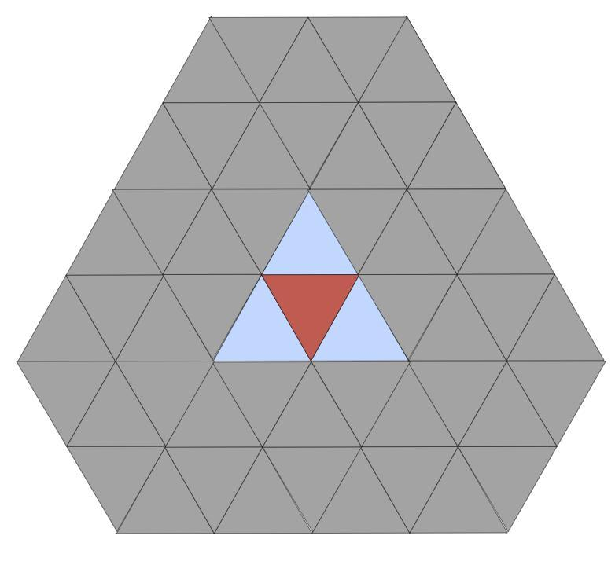

Ok, here it goes...
йо. помнишь ты предлагал сделать игру типа цивы? У меня тут одна идейка небольшая появилась...
знаешь как в циве клетки шестиугольные? Я такое в нескольких играх видел, но нигде ешё не видел _треугольных_ клеток
можно наверное особенный геймпелй на это накрутить
в настолках разве что видел...
типа обычно у тебя довольно прямолинейный выбор куда ходить: вперёд, назад, вверх вниз, а тут как бы варианты: назад, влево, вправо
это как минимум красиво будет, математично
а если ещё и уникальную механику удастся придумать, так вообще кайф
можно например что-то типа захвата территорий сделать на 3 игрока...
а, в poe кстати дерево талантов тоже треугольное...
можно сделать чтоб каждая клетка давала какой-то бонус, и чтоб постоянно приходилось выбирать: левый или правый...
например: бонус к какому-то из 3-х аттрибутов, и побеждает тот игрок, у которого в конце аттрибуты ближе всего по значению, или при перемножении дают самое большое число... (что по сути одно и тоже мне кажется)
21 + 3 + 1 = 25 23 * 1 * 1 = 23 8 * 8 * 9 = 64 * 9 12 * 12 * 1 = 144
завтра приеду, наверное обсудим, набросаю черновик игры...
и назвать игру: Newfags Can Triforce
Или Trilemma
а в рунете её будут сленгово называть "го в три ляма каточку"
Недоконца понял, это-таки стратегия с развитием как цива или что-то другое?
пока чёткой идеи нет, но больше склоняюсь к тому чтоб сделать как игру на игровой доске с матчами минут на 10
просто логическую